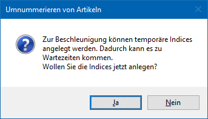
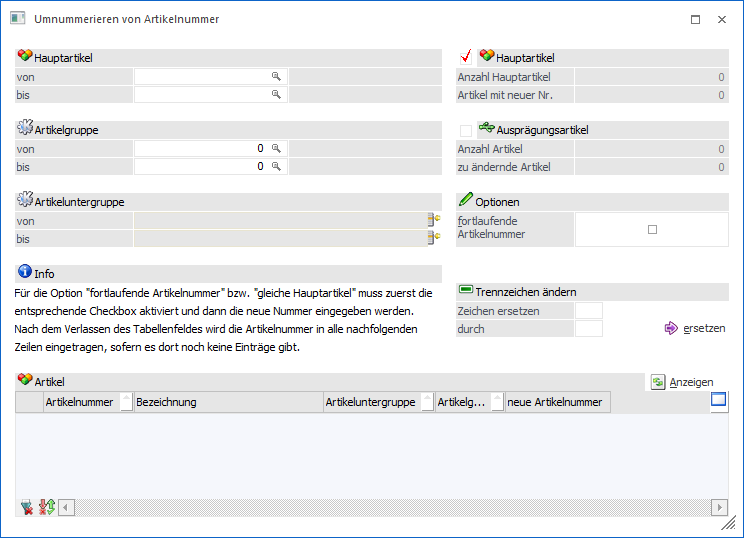
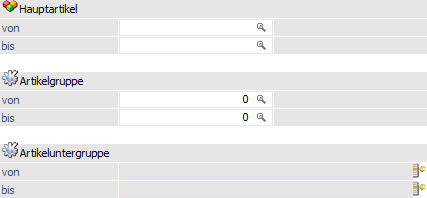
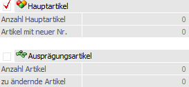
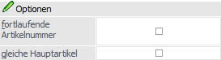
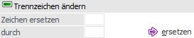
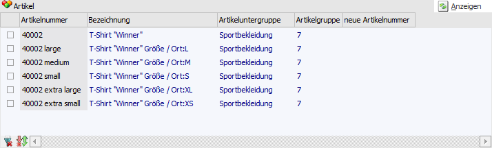
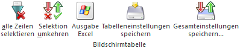
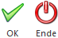

Der Menüpunkt "Umnummerieren von Artikelnummern", welcher über…
1 WinLine FAKT
1 Stammdaten
1 Artikelstamm
1 Umnummerieren von Artikelnummern
… geöffnet werden kann, ermöglicht es, bereits angelegten Artikeln eine neue Artikelnummer zuzuordnen.
Hinweis
Vor dem Öffnen des Menüpunktes erfolgt eine Abfrage, ob auf bestimmte Tabellen ein Index gelegt werden soll, wodurch die Umnummerierung beschleunigt wird. Hierbei ist zu beachten, dass die Erstellung der Indexe ebenfalls Zeit in Anspruch nehmen kann.

Im eigentlichen Fenster "Umnummerieren von Artikelnummern" kann anschließend entschieden werden, ob die Artikelnummern von Hauptartikeln und / oder Ausprägungsartikeln geändert werden sollen.
Achtung
Die Optionen bzw. Funktionen innerhalb des Fensters sind immer abhängig vom Inhalt der Tabelle "Artikel". Aus diesem Grund sollte immer wie folgt vorgegangen werden:
ü Durchführung der Selektion
ü Auswahl des Artikeltyp bzw. der Artikeltypen
ü Anwahl des Buttons "Anzeigen"
ü Auswahl der gewünschten Option oder Nutzung der Funktion "Trennzeichen ändern"

Selektion

Folgende Möglichkeiten stehen zur Verfügung, die Anzeige der Artikel, welche umnummeriert werden sollen, einzuschränken.
Ø Hauptartikel von / bis
Hier kann der Bereich über die Artikelnummer eingeschränkt werden.
Ø Artikelgruppe von / bis
An dieser Stelle kann die Ausgabe über die Artikelgruppe eingeschränkt werden.
Ø Artikeluntergruppe von / bis
Hier kann über die Artikeluntergruppen eingeschränkt werden.
Artikeltyp

In diesem Bereich wird angegeben, bei was für einem Artikeltyp (d.h. Hauptartikel und / oder Ausprägungen) eine Umnummerierung stattfinden soll.
Ø Hauptartikel
Durch Aktivierung dieser Option können in der weiteren Folge Hauptartikel umnummeriert werden.
Ø Anzahl Hauptartikel
An dieser Stelle wird nach Anwahl des Buttons "Anzeigen" die Anzahl der Hauptartikel angezeigt, welche in der Tabelle "Artikel" dargestellt werden.
Ø Artikel mit neuer Nr.
Hier wird die Gesamtanzahl der Artikel (unabhängig vom Artikeltyp) dargestellt, welche bei Anwahl des Buttons "Ok" bzw. der Taste F5 umnummeriert werden.
Ø Ausprägungsartikel
Durch Aktivierung dieser Option können in der weiteren Folge Ausprägungsartikel umnummeriert werden.
Ø Anzahl Artikel
An dieser Stelle wird nach Anwahl des Buttons "Anzeigen" die Anzahl der Ausprägungen angezeigt, welche in der Tabelle "Artikel" dargestellt werden.
Ø Artikel mit neuer Nr.
Hier wird die Gesamtanzahl der Artikel (unabhängig vom Artikeltyp) dargestellt, welche bei Anwahl des Buttons "Ok" bzw. der Taste F5 umnummeriert werden.
Optionen

Ø fortlaufende Nummer
Wenn mehrere Hauptartikel so umnummeriert werden sollen, dass die neuen Artikelnummern fortlaufend sind, so muss die Option "fortlaufende Artikelnummer" aktiviert werden.
Hinweis
Die Option muss nach Anwahl des Buttons "Anzeigen" aktiviert werden. Die Startnummer wird dann in der Tabelle "Artikel" (Spalte "neue Artikelnummer") definiert. D.h. nach der Eingabe einer neuen Artikelnummer wird durch Bestätigung per "Enter" bzw. Verlassen des Eingabefelds der Rest der Tabelle automatisch mit einer fortlaufenden Artikelnummer gefüllt.
Achtung
Werden in der Tabelle neben Hauptartikeln auch Ausprägungen angezeigt und die Eingabe einer neuen Artikelnummer erfolgt bei einer Ausprägung, so erhalten alle nachfolgenden Ausprägungen ebenfalls eine fortlaufende Artikelnummer (Verweise auf den Hauptartikel bleiben in diesem Fall natürlich bestehen). Wird die Nummer hingegen bei dem Hauptartikel angegeben, so erhalten die Ausprägungen immer automatisch die neue Artikelnummer des Hauptartikels (ergänzt um die jeweiligen Ausprägungen).
Ø gleiche Hauptartikel
Diese Option steht nur zur Verfügung, wenn ausschließlich Ausprägungen angezeigt werden sollen (siehe Bereich "Artikeltyp") und die Anzeige gestartet wurde (Button "Anzeigen").
Durch Angabe einer neuen Artikelnummer in der Tabelle (Spalte "neue Artikelnummer") erhalten alle nachfolgenden Ausprägungen automatisch die angegebene Artikelnummer (ergänzt um die jeweiligen Ausprägungen).
Achtung
Werden in der Tabelle Ausprägungen von unterschiedlichen Hauptartikeln aufgeführt, so erhalten alle nachfolgenden Ausprägungen die identische Hauptartikelnummer. In diesem Fall ist anzuraten über einer Selektion (siehe Feld "Hauptartikel von / bis") auf einen Hauptartikel vorab einzugrenzen.
Trennzeichen ändern

Ø Zeichen ersetzen / durch
Mit Hilfe dieses Bereichs kann ein Trennzeichen (z.B. jenes von Ausprägungsartikeln) innerhalb der Artikelnummer geändert werden. Hierfür wird in das Feld "Zeichen ersetzen" das "alte" Trennzeichen und in das Feld "durch" das "neue" Trennzeichen gesetzt. Nachdem die Anzeige gestartet wurde (Button "Anzeigen") kann durch Anwahl des Buttons "ersetzen" das Zeichen ausgetauscht werden (Spalte "neue Artikelnummer" wird gefüllt).
Achtung
Die Funktion des Änderns / Ersetzens wird nur durchgeführt, wenn noch keine neue Artikelnummer in der Tabelle angegeben wurde.
Anzeigen
Ø Anzeigen
Mit Hilfe des Buttons "Anzeigen" wird die Tabelle "Artikel" gemäß der zuvor getroffenen Selektion gefüllt.
Tabelle "Artikel"

Nach Anwahl des Buttons "Anzeigen" wird die Tabelle gemäß der vorher getätigten Selektion mit Artikeln gefüllt. Folgende Spalten stehen zur Verfügung:
Ø Auswahl
In der ersten Spalte kann definiert werden, ob die Artikelnummer des Artikels geändert werden soll oder nicht. Durch Angabe einer neuen Artikelnummer wird die Auswahl automatisch aktiviert.
Ø Artikelnummer / Bezeichnung / Artikeluntergruppe / Artikelgruppe
In diesen Spalten werden die Daten der umzunummerierenden Artikel angezeigt.
Ø neue Artikelnummer
In dieser Spalte wird die neue Artikelnummer angegeben.
Achtung
Wenn die Option "fortlaufende Nummer" oder "gleiche Hauptartikel" genutzt werden soll, dann muss die jeweilige Option zunächst aktiviert werden und dann an dieser Stelle eine Eingabe erfolgen.
Tabellenbuttons

Ø alle Zeile selektieren
Mit Hilfe dieses Buttons werden alle Zeilen aktiviert.
Ø Selektion umkehren
Durch Anwählen des Buttons "Selektion umkehren" werden aktivierte Zeilen deaktiviert und deaktivierte Zeilen aktiviert.
Ø Ausgabe Excel
Durch Anwahl des Buttons "Ausgabe Excel" wird der Inhalt der Tabelle an Microsoft Excel übergeben.
Ø Tabelleneinstellungen speichern
Die Spalten einer Tabelle können grundsätzlich an beliebige Positionen verschoben, bzw. in der Breite entsprechend angepasst werden. Durch Anwahl des Buttons "Tabelleneinstellungen speichern" werden die Einstellungen benutzerspezifisch gespeichert und bei dem nächsten Aufruf des Programmpunktes wieder vorgeschlagen.
Ø Gesamteinstellungen speichern
Im Gegensatz zu "Tabelleneinstellungen speichern" können mit "Gesamteinstellungen speichern" mehrere Tabellenaufbauten gespeichert und nach Wunsch geladen werden. Zusätzlich werden Sonderfunktionen der Tabelle (z.B. "Spalte gruppieren") ebenfalls bei der Speicherung bedacht.
Buttons

Ø Ok
Durch Anwahl des Buttons "Ok" bzw. der Taste F5 werden die Artikelnummern der selektierten Artikeln (siehe Tabelle "Artikel") umnummeriert.
Ø Ende
Durch Anwahl des Buttons "Ende" bzw. der Taste ESC wird der Programmbereich geschlossen.